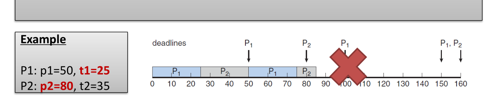
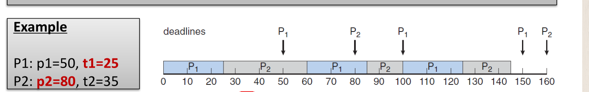

江学强 PB16120100
The first known correct software solution to the critical-section problem for twoprocesses was developed by Dekker. The two processes, P0 and P1, share the following variables: boolean flag[2]; /* initially false */ int turn ; The structure of process Pi (i == 0 or 1) is shown in Figure 1; the other process is Pj (j == 1 or 0). Prove that the algorithm satisfies all three requirements for the critical-section problem.
互斥问题：flag表示进程是否希望进入critical section，如果 flag[0]和flag[1]均为true，但只有变量turn==1时P1执行critical section，turn==0时P0执行critical section
前进（progress）问题：可以看出当一个进程结束critical section时，程序立刻将turn的值设为另一个进程，并且将自己的flag值设为false，此时刚刚结束的进程不会被选择进入critical section，只有另一个进程可能进入critical section（当另一个进程的flag值为true）
有限等待问题：一个进程在进入critical section之前会优先让另一个进程进入critical section（当另一个进程的flag值为true时），这就避免了一个进程持续重复进入critical section而使得另一个进程无限等待
Consider the code example for allocating and releasing processes shown in Figure 2. a. Identify the race condition(s). b. Assume you have a mutex lock named mutex with the operations acquire() and release() . Indicate where the locking needs to be placed to prevent the race condition(s).
a：number_of_process可能会带来数据冒险，对其修改没有保证互斥
b：在进入函数（题目中的两个函数）之前调用acquire，函数调用结束调用release
Servers can be designed to limit the number of open connections. For example, a server may wish to have only N socket connections at any point in time. As soon as N connections are made, the server will not accept another incoming connection until an existing connection is released. Use semaphores to limit the number of concurrent connections in the server.
信号量初始化为服务器最大连接数，当有服务请求连接时调用down（），释放连接时调用up（）
Consider the traffic deadlock depicted in Figure 3. a. Show that the four necessary conditions for deadlock indeed hold in this example. b. State a simple rule for avoiding deadlocks in this system.
a:
同时只有一辆车可以通过一个十字路口
车辆占据十字路口但不能通过时始终保持占据
没有车辆可以抢占前面的车辆通过路口
每个所有的车辆都等待占据路口的车辆通过路口，形成循环等待
b:
让占据十字路口并且正在等待的车辆停止等待后退即可（当然后面的车也得退）
Consider the deadlock situation that can occur in the diningphilosophers problem when the philosophers obtain the chopsticks one at a time. Discuss how the four necessary conditions for deadlock hold in this setting. Describe a deadlock-free solution, and discuss which necessary conditions are eliminated in your solution
四个条件
每只筷子同时只能一个哲学家占有
哲学家不能抢走别的哲学家手中的筷子
哲学家拿到筷子但没法进餐时也始终拿着筷子不放
每个哲学家都在等待自己需要的另一只筷子
解决方式：哲学家拿到一只筷子但不能拿到另一只筷子时就放下手中的筷子等待，这种方法是解决了上面叙述的第三个死锁条件
Discuss how the following pairs of scheduling criteria conflict in certain settings. a. CPU utilization and response time b. Average turnaround time and maximum waiting time c. I/O device utilization and CPU utilization
a:CPU利用率提高需要降低上下文切换的频率，这就导致响应时间增加
b:采取sjf算法可以降低平均周转时间，但这会很大程度上增长那些需要运行时间长的进程的等待时间
c:I/O利用率增大就是要尽快地响应I/O地请求但是这回导致更频繁地进行上下文切换，会降低CPU地利用率
Consider the exponential average formula used to predict the length of the next CPU burst. What are the implications of assigning the following values to the parameters used by the algorithm? a. α = 0 and τ 0 = 100 milliseconds b. α = 0.99 and τ 0 = 10 milliseconds
α = 0 τ 0 = 100时假设下一次CPU burst时100ms；α = 0.99 and τ 0 = 10考虑了时间局部性原理，给距离时间近的有关的进程赋予了更高的权重
Consider the following set of processes, with the length of the CPU burst time given in milliseconds:
The processes are assumed to have arrived in the order P1, P2, P3, P4, P5, all at time 0. a. Draw four Gantt charts that illustrate the execution of these processes using the following scheduling algorithms: FCFS, SJF, nonpreemptive priority (a smaller priority number implies a higher priority), and RR (quantum = 1).
b. What is the turnaround time of each process for each of the scheduling algorithms in part a?
c. What is the waiting time of each process for each of these scheduling algorithms?
d. Which of the algorithms results in the minimum average waiting time (over all processes)?
a:
FCFS： 111111111233345555
RR： 12345135151515111
SJF：24335555111111111
Priority：25555511111111334
b: turned around time
| FCFS | RR | SJF | Priority | |
|---|---|---|---|---|
| P1 | 10 | 19 | 19 | 16 |
| P2 | 11 | 2 | 1 | 1 |
| P3 | 13 | 7 | 4 | 18 |
| P4 | 14 | 4 | 2 | 19 |
| P5 | 19 | 14 | 9 | 6 |
c: waiting time
| FCFS | RR | SJF | Priority | |
|---|---|---|---|---|
| P1 | 0 | 9 | 9 | 6 |
| p2 | 10 | 1 | 0 | 0 |
| P3 | 11 | 5 | 2 | 16 |
| P4 | 13 | 3 | 1 | 18 |
| P5 | 14 | 9 | 4 | 1 |
d:SJF算法
Which of the following scheduling algorithms could result in starvation? a. First-come, first-served b. Shortest job first c. Round robin d. Priority
b d
Consider a system running ten I/O-bound tasks and one CPU-bound task. Assume that the I/O-bound tasks issue an I/O operation once for every millisecond of CPU computing and that each I/O operation takes 10 milliseconds to complete. Also assume that the context-switching overhead is 0.1millisecond and that all processes are long-running tasks. Describe is the CPU utilization for a round-robin scheduler when: a. The time quantum is 1 millisecond b. The time quantum is 10 milliseconds
a:91%
b:94%
Assume that two tasks Aand B are running on a Linux system. The nice values of Aand B are −5 and +5, respectively. Using the CFS scheduler as a guide, describe how the respective values of vruntime vary between the two processes given each of the following scenarios: a. Both Aand B are CPU-bound. b. A is I/O-bound, and B is CPU-bound. c. A is CPU-bound, and B is I/O-bound.
a: A的vruntime增长地更慢，二者都是CPU-bound，A的vruntime比B小
b: A的vruntime比B小因为A的vruntime增长的慢并且占用CPU的时间短
c: 不能确定
Give an example to illustrate under what circumstances rate-monotonic scheduling is inferior to earliest-deadline-first scheduling in meeting the deadlines associated with processes?
举ppt中的例子

速率下降算法优先执行P1，导致P2第二次未能按时完成

EDF算法根据ddl动态调整，两个进程都能按时完成